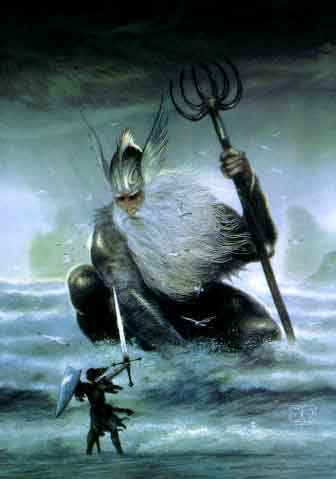
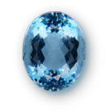
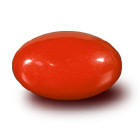
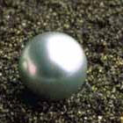

Notizie
Generali
Potente
dio del mare, il suo culto non conosce confini ed è adorato da marinai e
comunità sulla costa, ma anche da tritoni, ninfe e creature sottomarine.
Descrizioni
raffiguranti la divinità
Un possente titano dalla folta barba bianca con riflessi azzurri che ricorda
le creste delle onde dei mari in tempesta. Impugna nella mano sinistra un enorme
tridente simbolo del comando nelle acque. Non indossa indumenti,
ma ha muscoli ben definiti. Ha gli occhi blu come gli abissi ed il suo sguardo può
far gelare il sangue dei più temerari eroi. Si narra che sia solito sedere sul suo trono di
cristallo nella più profonda fossa abissale ed è circondato da delfini o
squali.

Semi-dei
SEMI-DEI
: Sono
potenti e molti di loro hanno un vero e proprio sotto culto particolare, ma mai
nessuno ha tentato di spodestare il potentissimo Eram. I più conosciuti sono:
Mannan
Mac Lir: Semi-divinità
degli squali, maligno e adorato dalle creature marine evil, è utilizzato da
Eram quando vuole punire chi lo ha
sfidato oppure non lo ha rispettato. Il suo simbolo è un enorme squalo nero con
una macchia bianca fra gli occhi.
Trilon: Semi-dio
dei tritoni, intercede per costoro con Eram, ed è adorato anche fra i non
tritoni. E’ un tritone con un arpione di acciaio lucente nelle mani.
Gouarnatàt: Semi-dio
degli abissi e dei mostri abissali, tremendo con gli stranieri, ma non di indole
malvagia, difende gli abissi e le fosse oceaniche da chi voglia esplorarle. Incute
paura e rispetto a molti. E’ raffigurato come una immane piovra.
Seldea: La
semi-divinità delle sirene, è la più buona delle semi-divinità, ma se è
offesa può divenire molto vendicativa. A lei si ritiene spetti il merito di
molti salvataggi in mare dopo i naufragi.
Minori
I mostri degli abissi : Sono tremende creature degli abissi (piovre, karken, serpenti marini) che Eram invia per punire gli esseri viventi che osano sfidarlo. Sono potenti e spesso adorate dalle creature meno intelligenti. Comunque non sono tutti cattivi, alcuni sono anche buoni come le enormi balene d’argento che quando si avvistano portano molta fortuna.
Compiti dei chierici
Curare in ogni modo e difendere gli ambienti marini. Venerare la loro divinità e placarne il carattere irascibile. Controllare che gli esseri della superficie non si intromettano nelle faccende del mare. Curare le creature marine.
Il
legame con il mare
I chierici di Eram hanno un particolare legame con il mare. Per mantenere i loro poteri devono compiere tutti i riti che sono necessari a rinsaldare tale legame. Se non lo fanno perdono tutti i poteri speciali e gli incantesimi fino a che non completano di nuovo il ciclo dei riti marini.
Organizzazione
del Culto su Arelia
Il
culto di Eram non è organizzato sulle coste in maniera uniforme. La divinità
viene adorata in quelli che sono chiamati i
Grandi
Oracoli delle Onde.
In alcune città sommerse di tritoni esistono veri e propri templi con molti
chierici ed una gerarchia rigida. Nelle città costiere in genere vi è un tempio
semi-sommerso dove si può trovare il capo del tempio e alcuni giovani adepti. I
culti delle divinità minori invece sono particolari, i seguaci del malvagio
Mannan Mac Lir sono organizzati in sette e compiono sacrifici umani e di
creature intelligenti, inoltre hanno templi e addestrano squali per la loro
difesa. Comunque all’interno dei vari templi si riscontrano solitamente le
seguenti gerarchie, al vertice vi è un
Maestro
delle Onde
di minimo 7° livello, che è il capo del culto e comanda il tempio, poi vi sono
vari chierici divisi fra i più esperti che prendono il nome di
Adoratori del Mare
i quali avendo raggiunto il 5° livello sostituiscono in alcune mansioni il loro
Maestro delle Onde e possono svolgere dei riti autonomamente. In alcuni casi,
inoltre, esistono alcuni templi minori chiamati
Templi
Marini. Si
tratta di templi satelliti di un Grande
Oracolo delle Onde gestiti,
in nome del Maestro delle Onde, da un Adoratore del Mare a costui fedele. Gli altri chierici
iniziati al culto di Eram e di livello inferiore al quinto prendono il nome di
Devoto
delle Acque.
Comunque fra un tempio e l’altro non esiste alcun coordinamento, non vi è
però solitamente competizione e guerra fra i vari templi e le relazioni sono di
solito amichevoli. Difficilmente i templi, infatti, combattono tra loro, anche
perché non hanno possesso territoriale e non badano al numero dei fedeli, il
culto si basa fondamentalmente sui sacrifici, si faccia eccezione, però, ai
templi in cui sono adorati Mannan Mac Lir e Gouarnatàt.
I Fedeli di Eram
A differenza delle altre divinità, la fede di Eram può considerarsi come una fede secondaria e compatibile con ogni altro credo religioso. Un fedele di una qualsiasi altra divinità, infatti, può essere contemporaneamente fedele di Eram. Ciò è possibile in quanto il comportamento richiesto ai fedeli di questa divinità è poco incisivo e molto difficilmente incompatibile con quello richiesto dagli altri culti (anche gli stessi chierici di altri culti possono divenire, infatti, fedeli di Eram).
Ai
fedeli, infatti, è richiesto unicamente di recarsi, una volta all'anno, presso
un qualsiasi Tempio della divinità (può trattarsi anche di un Tempio Marino)
per offrire una donazione al potente dio del mare per ingraziarsene i favori e
placare il suo carattere irascibile.
L'offerta annuale dei fedeli di Eram deve essere commisurata sia alla ricchezza
patrimoniale del fedele che al suo livello di esperienza, applicandosi
unicamente la donazione fra queste più elevata.
| Condizione economica o livello di esperienza | Contributo minimo richiesto |
| Umile (guadagna fino a 120 g.p. lorde all'anno) | 5 g.p. all'anno |
| Agiato (guadagna fino a 1000 g.p. lorde all'anno) | 25 g.p. all'anno |
| Ricco (guadagna oltre 1000 g.p. lorde all'anno) | 150 g.p. all'anno |
| Personaggi dal 1° al 2° livello | 10 g.p. all'anno |
| Personaggi dal 3° al 4° livello | 30 g.p. all'anno |
| Personaggi dal 5° al 6° livello | 100 g.p. all'anno |
| Personaggi dal 7° al 8° livello | 250 g.p. all'anno |
| Personaggi dal 9° livello o superiore | 500 g.p. all'anno |
Tale offerta va pagata durante l'ultimo mese di ogni anno solare e sarà commisurata ai guadagni lordi ottenuti od al livello raggiunto (comprensivo di training) durante il medesimo anno.
Inoltre, almeno una volta all'anno devono viaggiare per almeno 10 giorni ininterrotti in mare aperto (non sono considerati validi i giorni di navigazione in acque costiere) via mare al fine di rinsaldare il loro legame con l'ambiente marino.
Si noti che, comunque, si tratta di un'importante scelta religiosa e non di un mero obolo versato per ottenere, egoisticamente, i favori della divinità. Colui che si dichiara fedele, infatti, riconosce la supremazia di Eram sulle acque sottomettendosi alla sua potenza e venerandolo. In questo modo costui estende, in un certo senso, la propria fede oltre i confini terrestri del continente areliano. I fedeli, quindi, non solo rispettano i luoghi sacri ed i ministri del culto di questa divinità ma anche il volere che il dio esprime attraverso questi ultimi in relazione alle vicende che coinvolgono anche la sfera marina.
Deve osservarsi, infine, che la fede in Eram è strettamente personale e non gestita, registrata o controllata dai chierici della divinità. Chi decide di divenire fedele di questa divinità stringe una sorta di rapporto diretto la stessa basato sulla sottomissione al suo potere e alla sua sfera di influenza. Per questo motivo, chi si professa formalmente fedele senza esserlo sostanzialmente non potrà considerarsi un vero fedele; allo stesso modo il fedele che manca di rispetto alla divinità o ne pregiudica il volere o gli interessi perderà automaticamente questo status.
Acquisire lo status di fedele è, infatti, fondamentale in quanto Eram non permette che il suo potere sia utilizzato in favore di quelle creature che non lo riconoscono, sinceramente, come unica divinità dominatrice del mondo marino. Nessun incantesimo, incantamento o potere clericale concesso da Eram, avrà effetti positivi su chi non può considerarsi un vero fedele della divinità. Questa regola trova un'eccezione con la magia Weather Stasis (4° livello di potere generale) i cui effetti (eventualmente positivi) si riverbereranno anche nei confronti di chi non è fedele della divinità.
Gemme sacre alla divinità (link)
| Pietra Ornamentale |
Pietra Preziosa |
Pietra Preziosa |
| ACQUAMARINA | CORALLO | PERLA |
|
 |
 |
 |
Schema
di gioco
Allineamento
Divinità : Caotica Neutrale
Chierici : Tutti i Caotici
Seguaci : Nessuna Limitazione
Abilità
minime richieste
Saggezza
13
Carisma
9
I chierici che hanno un punteggio minimo di saggezza 16 e di carisma 13 ottengono un risparmio del 10 % dei punti esperienza necessari al passaggio di livello.
Razze
permesse
Chierici : Qualsiasi tranne i nani e gli elfi scuri
Fedeli : Qualsiasi razza (difficilmente però di razze abituate a vivere sulle montagne o sottoterra come alcuni nani, dwolf, gnomi ed elfi scuri).
NonWeapon
Proficiencies (priest, general)
Bonus = Herbalism, solo in relazione alle piante acquatiche (link)
Required
=
Raccomandate
= Reading\Writing, Weather Sense, Direction Sense, Distance Sense, Fishing, Rope Use,
Seamanship, Navigation,
Animal Lore (creature marine)
Weapon
Proficiencies
Required = Nessuna
Armi
e armature permesse
Armature: Nessuna corazza
Scudi: Nessuno scudo
Armi ad Asta:
Two Handed
Trident, Harpoon
Flagelli:
Manriki-Gusari with
Hook
Pugnali:
Parang, Pih-kaetta,
Khanjar, Dagger, Bone Dagger, Dirk, Throwing Dagger
Poteri speciali
Momento di flusso dell'energia
divina:
Il momento utilizzato da Eram
corrisponde a quello in cui spunta ad oriente la lucente Stella Aurea,
il sole non si vede ma il cielo comincia ad illuminarsi
Creare Acqua Sacra di Eram a partire dal 3° livello di esperienza
Creare Il Simulacro di Sabbia a partire dal 3° livello di esperienza
Trasformazione in Creatura Marine a partire dal 7° livello di esperienza
Creare Pergamene Magiche a partire dal 7° livello di esperienza
Creare Pozioni Magiche a partire dal 9° livello di esperienza
Creare Oggetti Magici a partire dal 12° livello di esperienza
Simboli
fondamentali del Culto
La
Veste delle Onde
:
E'
la veste sacra utilizzata dai chierici di Eram. Il colore del tessuto ricorda i
colori del mare e varia, assieme alla sua la qualità, con il grado rivestito
dal chierico nella gerarchia della divinità. Tutte le vesti sono lunghe ed
avvolgenti, composte da più strati in modo tale che, quando il chierico
cammina, nuota oppure si trova esposto al vento, i vari drappi fluttuino
simulando il continuo moto ondoso del mare.
- Gli Adoratori
delle Acque
indossano una veste di lino semplice con drappi alternati di color verde
smeraldo e azzurro, il costo di questa veste si aggira intorno le 30 monete
d'oro.
- Gli Adoratori
del Mare indossano
una veste di lino riccamente ricamata con drappi alternati di blu scuro ed
azzurro, il costo di questa veste si aggira intorno le 100 monete d'oro.
- I Devoto delle
Acque indossano
una veste di lino e seta riccamente ricamata con drappi alternati di blu scuro
ed azzurro, inoltre i bordi dei drappi sono adornati con filamenti d'argento per
ricordare la spuma delle onde che si infrangono sugli scogli, il costo di questa
veste si aggira intorno le 250 monete d'oro.
Il Medaglione del Tridente : Vero e proprio simbolo sacro del culto, è un medaglione con scolpito la punta di un tridente.
Lo Squalo imbalsamato o scolpito : Nelle case dei marinai, o se è nero con una stella bianca fra gli occhi è il simbolo di Mannan Mac Lir
Statua della piovra con tentacoli protesi : Simbolo della protezione di un luogo inviolabile e di Gouarnatat
Incantesimi generali (Player's Handbook,Tome of Magic,Spell and Magic,Necromancers)
1° LIVELLO DI POTERE
|
Animal Friendship* |
|
Calm Animals* |
|
Call Upon Faith |
|
Combine |
|
Detect Magic |
|
Endure Cold |
|
Entangle Seaweed |
| Find Water |
|
Invisibility to Animals* |
|
Locate Animals or Plant* |
| Magical Stone |
| Precipitation |
| Purify Food and Drink |
|
Sanctuary* |
| Water Shield |
|
Wind Column |
Note esplicative agli spells del 1° livello:
Animal Friendship, Calm Animals e Invisibility to Animals funzionano solo sulle creature marine.
Sanctuary funziona solo in mare (anche se su un vascello) o entro 100 metri dalla costa.
Entangle funziona solo con le alghe marine.
Locate Animal or Plants funziona solo per cercare animali e piante marine.
2° LIVELLO DI POTERE
|
Charme Marine Mammal |
|
Messanger* |
|
Speak with Marine Animals |
| Chaos Ward |
| Elemental Tentacle (Water) |
| Elemental Trap (Water) |
|
Elemental Weapon (Water) |
|
Aura of Comfort |
| Resist Cold |
| Sanctify |
Note esplicative agli spells del 2° livello:
Charme Mammal funziona solo sui mammiferi marini.
Speak with Animals funziona solo sugli animali marini.
Messanger evoca solo piccoli animali marini se vivono nella zona.
3° LIVELLO DI POTERE
| Accellerate Healing |
|
Control Marine Animal |
|
Dispel Magic |
|
Hold Marine Animal |
|
Water Breathing |
|
Water Walk |
|
Weather Prediction |
| Wind and Rain Protection |
Note esplicative agli spells del 3° livello:
Control e Hold Animal funzionano solo sugli animali marini.
4° LIVELLO DI POTERE
| Control Temperature |
| Fire Purge |
|
Focus |
|
Free Action |
|
Protection from Elemental (Water) |
|
Protection from Lightning |
|
Reflecting Pool |
| Wall of Water |
|
Weather Stasis |
Incantesimi speciali (Unici della divinità)
| Compact Simulacrum |
|
Crab Attack |
|
Detect Sea Coast |
| Detect Sea Predator |
| Eel Touch |
| Float |
| Magical Sand |
|
Pressure Resistance |
| Rush of Sand |
| Sea Portal |
| Sea Urchin Skin |
| Sea Weeds' Floor |
| Sponge Floor |
2° LIVELLO DI POTERE
|
Flippers |
|
Gusts |
|
Jellyfish Touch |
| Link Simulacrum |
| Moray Bite |
| Salt Water Jet |
| Skin of Sand |
| Sound Navigation |
| Shark Skin |
| Shells' Shield |
|
Summon Large Crab |
3° LIVELLO DI POTERE
| Cloak of Mist |
| Dagger Volley |
|
Enlarge Simulacrum |
|
Sea Urchin Rain |
|
Seaweed Whip |
| Silver Dagger of Skinning |
|
Summon Hermit Large Crab |
4° LIVELLO DI POTERE
|
Giant Gull Transporter |
|
Ice Cage |
| Moonson Violence |
|
Shrink Simulacrum |
| Simulacrum Shell Armor |
|
Summon Giant Crab |
| Trident of Penetration |